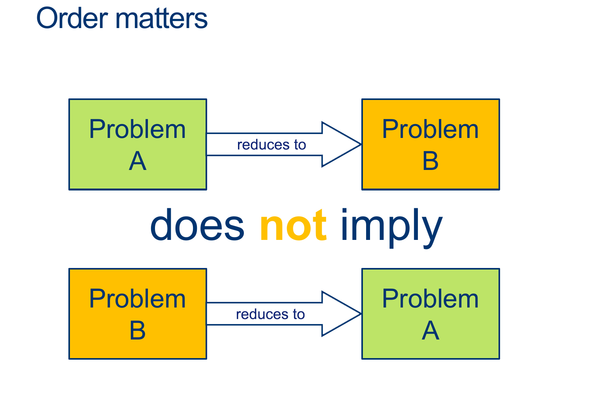

Lecture Notes 19: More Reductions and Undecidable problems
Outline
This class we'll discuss:- Recap: Reductions
- Recap: ATM ≤ ATM-01
- More Reductions and Undecidable Problems
Recap: Reductions

(Proof that ATM ≤ HALT)
In other words, \( HALT\) is AT LEAST as hard as \( ATM \) (So if we can solve HALT, we can, for sure, solve ATM)
The Proof:
Assume HALT is decidable, and so there exists some \(D_{HALT}\) that decides, for any input \(< M,w>\), whether \(M\) halts on \(w\).
We'll design the Machine \(D_{ATM} \) as follows:
\[ \begin{align*} &D_{ATM}:\\ & \text{ On input $ < M, w > $ }:\\ & \text{ Simulate $D_{HALT} \; on \; < M, w > $}\\ & \text{ If $D_{HALT}$ rejects, $M$ doesn't halt, so it did not accept: REJECT. }\\ & \text{ If $D_{HALT}$ accepts, we know $M$ won't loop forever, so }\\ & \quad \text{ Simulate $M$ on $w$ ADWID }\\ \end{align*} \]
This machine is a decider for ATM (why?)
– it avoided the only problem we had with solving ATM, namely telling the difference between looping and lot waiting long enough.
However, we proved that ATM was undecidable by contradiction just a few minutes ago.
Aaaand...the only condition we need to build \(D_{ATM}\) was that \(D_{HALT}\) existed, so ...
\(D_{HALT} \; \) must not exist.

Example:
Above, we said:
\( ATM \leq HALT \)
Therefore :
- \(D_{HALT}\) can be used to build \(D_{ATM}\)

Example:
Above, we said:
\( ATM \leq HALT \)
Therefore :
- It is possible that \(D_{HALT}\) can be much harder to build than \(D_{ATM}\), so if you have \(D_{ATM}\), you would still have much more to do.
- If you want to show equivalence, you have to prove both directions.
(Proof that ATM ≤ ATM01)


The Proof:
Assume ATM01 is decidable, and so there exists some \(D_{ATM01}\) that decides, for any input \(< M >\), whether \(M\) accepts \(w = 01\).
We'll design the Machine \(D_{ATM} \) as follows:
\[ \begin{align*} &D_{ATM}:\\ & \text{ On input $ < M, w > $ }:\\ & \text{ 1. build a HELPER machine (but don't run it yet) $Helper_{M,w}$ that is shown below: }\\ & \; \\ & \qquad Helper_{M,w}:\\ & \qquad \text{ On input $ x $ }: \quad \color{gray}{\text{# x: Anything! we don't care} }\\ & \qquad \text{ Ignore $ x $ and run $M$ on $w$ ADWID} \quad \color{gray}{\text{# We hardcode what $Helper_{M,w}$ does} }\\ & \; \\ & \text{ 2. Simulate $D_{ATM01}$ on $Helper_{M,w}$ } ADWID\\ \end{align*} \]
Analysis of cases
What is going on?:
- Inside our \(D_{ATM} \) machine, we use \(D_{ATM01} \) to ask if its input TM \(M\) accepts \(01\) ...
But in order to do it ... it is forced to simulate the input machine \(M\) ... instead of running \(D_{ATM01} \) on \(M\), we can have \(D_{ATM01} \) run on a Trojan-Horse Machine whose only job is to check if \(M\) accepts \(w\)! - \(Helper_{M,w}\) is a TM built solely to check if the \(M\) actually accepts the \(w\) from the input to \(D_{ATM} \) (\( < M, w > \) ).
- When \(D_{ATM01} \) runs \(Helper_{M,w}\) with input \(01\), we IGNORE the input and just run \(M\) on \(w\)
It will actually answer if \(M\) accepts \(w\) rather than if the input \(Helper_{M,w}\) accepts \(01\).- If \(Helper_{M,w}\) replies ACCEPT, then \(D_{ATM01}\) would return ACCEPT
- If \(Helper_{M,w}\) replies REJECT, then \(D_{ATM01}\) would return REJECT
- The output of \(D_{ATM01} \) is NOT actually answering if its input accepts \(01\)... it is secretly answering the question : "Does \(M\) accept \(w\)?"
If \(D_{ATM01} \) says that \(Helper_{M,w}\) accepts 01,
we know that \(M\) must have accepted \(w\).
For any \(M, w\) pair that gets passed into \(D_{ATM} \), we can construct a hardcoded helper machine and trick \(D_{ATM01} \) into telling us the answer,
in other words...deciding ATM.
However, This can't be true!!,
we know ATM is undecidable, so ATM01 must also be undecidable.
The Python-Example
(Read carefully by yourself later)
A Practical Example:
The following is a contrived example to show how we can have a Trojan-Horse Helper TM inside another TM:
You can run this program to check each expected outcome.
# ------------------------------------------------------ # Example of how a Turing Machine (program) can create an # ad-hoc helper TM (program) to complete a reduction # in this case ATM ≤ ATM_01 # # By Pablo Frank Bolton # 2022 # ------------------------------------------------------ import sys from io import StringIO # Later, change to True for manual input manual_input = True def main(): '''Tests how example 'Deciders' This program has three main sections. In the first part, each individual function is tested directly with different strings. In the second part, the function D_ATM01 is used to test if an input function M accepts the string '01'. Three input functions M1, M2, and M3 are passed to D_ATM01 to demonstrate what it does. In the Third part, the 'Decider' function D_ATM is constructed around D_ATM01 and tested for various input pairs <M, w>. ''' print('M1, M2, M3 Testing STARTED') print('#############################') # Direct calls to M1, M2, and M3 with different words print ( f"Does M1 accept 01? :", end = "" ) print ( f" \t {M1('01')}" ) print ( f"Does M1 accept 11? :", end = "" ) print ( f" \t {M1('11')}" ) print ( f"Does M2 accept 01? :", end = "" ) print ( f" \t {M2('01')}" ) print ( f"Does M2 accept 11? :", end = "" ) print ( f" \t {M2('11')}" ) print ( f"Does M3 accept 01? :", end = "" ) print ( f" \t {M3('01')}" ) print ( f"Does M3 accept 0? :", end = "" ) print ( f" \t {M3('0')}" ) print('#############################') print('M1, M2, M3 Testing Done') print('\n') print('D_ATM_01 Testing STARTED') print('#############################') # Call to D_ATM01 to see if function M1 accepts '01' print ( f"Does M1 accept 01? :", end = "" ) print ( f" \t {D_ATM01(M1)}" ) # Call to D_ATM01 to see if function M2 accepts '01' print ( f"Does M2 accept 01? :", end = "" ) print ( f" \t {D_ATM01(M2)}" ) # Call to D_ATM01 to see if function M3 accepts '01' print ( f"Does M3 accept 01? :", end = "" ) print ( f" \t {D_ATM01(M3)}" ) print('#############################') print('D_ATM01 Testing Done') print('\n') print('D_ATM Testing STARTED') print('#############################') print ( f"Does M1 accept 010? :", end = "" ) print ( D_ATM(M1, '010') ) print() print ( f"Does M1 accept 000? :", end = "" ) print ( D_ATM(M1, '000') ) print() print ( f"Does M2 accept 11? :", end = "" ) print ( D_ATM(M2, '11') ) print() print ( f"Does M3 accept 111? :", end = "" ) print ( D_ATM(M3, '111') ) print() print ( f"Does M3 accept 010? :", end = "" ) print ( D_ATM(M3, '010') ) # enable manual input to test on M2 if manual_input: print('\n') word = input("Give a binary string or 'stop': ") while word != 'stop' or check_word(word): if word == 'stop': break if check_word(word): tm = input("choose a machine (1, 2, or default 3): ") if tm == "1": print ( D_ATM(M1, word) ) elif tm == "2": print ( D_ATM(M2, word) ) else: print ( D_ATM(M3, word) ) word = input("Give a binary string or 'stop': ") print('#############################') print('D_ATM Testing Done') def D_ATM01 ( M ): '''Checks if an input function M accepts string 01 ''' ret = M('01') if ret == True: return True elif ret == False: return False else: return '?' def M1(w:str): '''Accepts any string that starts with 01 ''' if len(w) >= 2: if w[0] == '0' and w[1] == '1': return True return False def M2(w:str): '''Accepts only string 11 ''' if len(w) == 2: if w[0] == '1' and w[1] == '1': return True return False def M3(w:str): '''Rejects any string shorter than 2 and Floops with any string of size 2 or greater ''' if len(w) >= 2: if w[0] == '0' and w[1] == '1': # Floop with artificial STOP max = 2 count = 0 while True: count+=1 if count > max: print ("\t ...I got impatient...", end = "" ) return '?' return True return False def D_ATM (M:str, w:str ): '''D_ATM is constructed using ONLY: A Helper is built specifically for the inputs M and w, which ignores any input given to it and simply runs M on w. D_ATM01 and ''' # a "string to run exec with" to make the Helper helper_def = f''' def Helper_{M.__name__}_{w}(x): # 0. ignore input x # 1. Simulate {M.__name__} on {w} # 2. ADWID print( {M.__name__}("{w}"), end = "" ) ''' # Creating the Helper for the specific M and w exec(helper_def) # a "string to run exec with" to call D_ATM01(Helper) D_ATM01_call = f"D_ATM01( Helper_{M.__name__}_{w} )" # create file-like string to capture output codeOut = StringIO() # capture output and errors sys.stdout = codeOut # Calling D_ATM01 with Helper as input exec(D_ATM01_call) # restore stdout and stderr sys.stdout = sys.__stdout__ #get the output from the called helper output = codeOut.getvalue() print(f"(Output from D_ATM01( Helper_{M.__name__}_{w} is {output}) ", end = "" ) codeOut.close() if output == 'True': return True elif output == 'False': return False else: return '?' def check_word(word): '''To check that strings are all 0s and 1s; for manual input''' char_list = ["0", "1"] matched_list = [chars in char_list for chars in word] if False in matched_list: return False return True if __name__ == "__main__": main()
Expected outcomes:
Example call:
- Calling \(\;\;D_{ATM} (< M1, 0110 >) \;\):
- First \(\;\;D_{ATM}\;\) creates (but doesn't run) a helper TM called \(\;HELPER_{M1\_0110}\;\)
- Second, \(\;D_{ATM}\;\) runs \(\;D_{ATM01}\;\) on input \(\;HELPER_{M1\_0110} \;\)
- First \(\;D_{ATM01}\;\) runs \(\;HELPER_{M1\_0110} \;\) on input \(\;01\;\)
- First \(\;HELPER_{M1\_0110}\;\) IGNORES input \(\;01\;\)
- First \(\;D_{ATM01}\;\) runs \(\;HELPER_{M1\_0110} \;\) on input \(\;01\;\)
- Since \(\;M1\;\) ACCEPTS input \(\;0110\;\), \(\;HELPER_{M1\_0110}\;\) returns ACCEPT
- First \(\;\;D_{ATM}\;\) creates (but doesn't run) a helper TM called \(\;HELPER_{M1\_111}\;\)
- Second, \(\;D_{ATM}\;\) runs \(\;D_{ATM01}\;\) on input \(\;HELPER_{M1\_111} \;\)
- First \(\;D_{ATM01}\;\) runs \(\;HELPER_{M1\_111} \;\) on input \(\;01\;\)
- First \(\;HELPER_{M1\_111}\;\) IGNORES input \(\;01\;\)
- Second, \(\;HELPER_{M1\_111}\;\) runs \(\;M1\;\) on \(\;111\;\)
- Since \(\;M1\;\) REJECTS input \(\;111\;\), \(\;HELPER_{M1\_111}\;\) returns REJECT
- Now, \(\;D_{ATM01}\;\) returns what \(\;HELPER_{M1\_111}\;\) returns: REJECT
- First \(\;D_{ATM01}\;\) runs \(\;HELPER_{M1\_111} \;\) on input \(\;01\;\)
- Now, \(\;D_{ATM}\;\) returns what \(\;D_{ATM01}\;\) returns: REJECT
More Reductions: The EMPTY Language
Let's go together
Let's use, in addition to \(D_{EMPTY} \), an extra HELPER machine to help us extend the usefulness of \(D_{EMPTY} \).
(Wait; then Click)
Assume that Empty_TM is decidable, and so there exists some \(D_{EMPTY}\) that decides for any input \(< M >\) whether \(M\)’s language is empty.
We'll design the Machine \( D_{ATM} \) as follows:
\[ \begin{align*} & D_{ATM}:\\ & \text{ On input $ < M, w > $ }:\\ & \text{ 1. build a HELPER machine (but don't run it yet) $Helper_{M,w}$ that is shown below: }\\ & \; \\ & \qquad Helper_{M,w}:\\ & \qquad \text{ On input $ x $ }: \quad \color{gray}{\text{# x: Anything! we don't care} }\\ & \qquad \text{ Ignore $ x $ and run $M$ on $w$ ADWID} \quad \color{gray}{\text{# We hardcode what $Helper_{M,w}$ does} }\\ & \; \\ & \text{ 2. Simulate $D_{EMPTY}$ on $Helper_{M,w}$ }\\ & \qquad \text{ If it accepts, REJECT (if the language of $Helper_{M,w}$ is empty, $M$ doesn’t accept $w$)}\\ & \qquad \text{ If it rejects, ACCEPT (the only way $Helper_{M,w}$ accepts anything is if $M$ accepts $w$)}\\ \end{align*} \]
Analysis of cases
What is going on?:
- Inside our \(D_{ATM} \) machine, we use \(D_{EMPTY} \) to ask if its input TM \(M\)'s' language is empty ...
But in order to do it ... it is forced to simulate the input machine \(M\) ... instead of running \(D_{EMPTY} \) on \(M\), we can have \(D_{EMPTY} \) run on a Trojan-Horse Machine whose only job is to check if \(M\) accepts \(w\)! - \(Helper_{M,w}\) is a TM built solely to check if the \(M\) actually accepts the \(w\) from the input to \(D_{ATM} \) (\( < M, w >\) ).
- When \(D_{EMPTY} \) runs on \(Helper_{M,w}\), it simlates \(Helper_{M,w}\) (on some unimportant input); \(Helper_{M,w}\) IGNORES the input and just runs \(M\) on \(w\)
It will actually answer if \(M\) accepts \(w\) rather than if the input \(Helper_{M,w}\) has an empty language.- If \(D_{EMPTY}\) returns ACCEPT, then \(Helper_{M,w}\) rejects all words (because \(M\) rejects\(w\)), so return REJECT
- If If \(D_{EMPTY}\) returns REJECT it was because \(Helper_{M,w}\) accepted, which means \(M\) accepted\(w\);so return ACCEPT
- The output of \(D_{EMPTY} \) is NOT actually answering if its input has an empty language... it is secretly answering the question : "Does \(M\) accept \(w\)?"
For any \(M, w\) pair that gets passed into \(D_{ATM} \), we can construct a hardcoded helper machine and trick \(D_{EMPTY} \) into telling us the answer,
in other words...deciding ATM.
However, This can't be true!!,
we know ATM is undecidable, so EMPTY must also be undecidable.
More Reductions: The \(\overline{EMPTY}\) Language
Is \(\overline{EMPTY}\) Decidable?
\(\overline{EMPTY}\) is the complement language of \(EMPTY\).
Its definition, should be:
\[ \overline{EMPTY} = \{ < M > | \text{TM $M$ accepts at least one string} \} \]
There is a first simple step: We can say, for sure that \(\overline{EMPTY}\) must be undecidable... Why?
(Wait; then Click)
Recognizer by construction:
\[ \begin{align*} &R_{\overline{EMPTY}}:\\ & \text{ On input $ < M > $ }:\\ & \text{ Simulate M on all possible w's one at a time}\\ & \text{ If any accepts, accept. }\\ \end{align*} \]
Is there a problem here?
(Wait; then Click)
The computation is FINITE!

(Wait; then Click)
Recognizer by construction:
\[ \begin{align*} &R_{\overline{EMPTY}}:\\ & \text{ On input $ < M > $ }:\\ & \text{ Simulate M on all possible w's DOVETAILED}\\ & \text{ If any accepts, accept. }\\ \end{align*} \]
Is there a problem here?
More Reductions: The \(\overline{EQ}\) Language
(Wait; then Click)
Reducing EMPTY to EQ.
\[ \begin{align*} &D_{EMPTY}:\\ & \text{ On input $ < M > $ }:\\ & \text{ Build a helper $TM_{\emptyset}$ such that $L(TM_{\emptyset}) = \emptyset$ }:\\ & \text{ Run $D_{EQ}$ on input $ < M, TM_{\emptyset} >$ ADWID}\\ \end{align*} \]
Note that \(D_{EQ}\) tells whether \(\; < M, TM_{\emptyset} > \; \in \; EQ \;\) , that is, whether \(L(M) = L(TM_{\emptyset}) = \emptyset\)... Which is the question that \(D_{EMPTY}\) is supposed to answer.
Next class: Recap for Midterm
NOTES: The Midterm will include everything UP to Turing Machines but NOT INCLUDING Reductions.
Homework
[Due for everyone]
PS05 Due Friday 03/11 (With automatic extension until the Monday AFTER spring Break)
[Optional]
TODO
[Due for everyone]
[Optional]